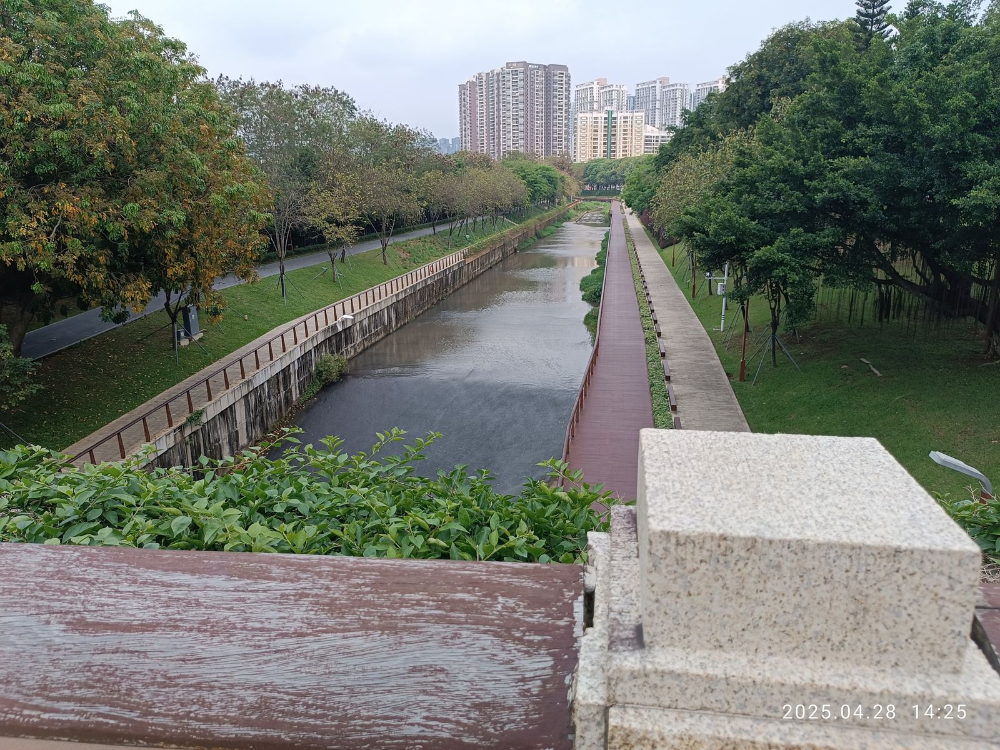
慢行网络 · 连接社区与滨水公共空间
大沙河两岸步道把绿色空间、社区与公共活动节点串联起来。 这种连续、舒适的慢行环境，与轨道、公交和城市道路共同组成 更完整的综合交通体系，也让日常出行更贴近河流与城市自然。
一条路，一座城，一个时代
深圳，中国改革开放的前沿阵地与"试验田"。四十余年间，从南海边陲的渔村小镇 蝶变为拥有两千万人口的国际化大都市，交通运输始终是这座城市拔节生长的脊梁。 从建市初期的泥土路与几路柴油公交，到如今四通八达的立体交通网络与全球领先的 新能源公交体系；从罗湖桥头单一的铁路过境通道，到"轨道上的大湾区"核心枢纽—— 深圳交通的每一次跨越，都是改革开放伟大实践最生动的注脚。
本展览以馆藏影像与公开数据为基础，通过新旧对比与时空长廊的形式， 回顾深圳交通从无到有、从追赶到引领的壮阔历程，致敬每一位为这座城市 铺路架桥的奋斗者，并展望交通强国战略下更加恢弘的未来图景。
从泥土路到立体交通网——同一片土地，两代人的记忆
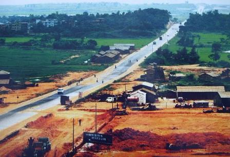
深圳建市之初，全市仅有公路约720公里，且多为等外公路。 特区成立后第一条城市主干道——深南路于1979年动工， 起初仅为7米宽的沥青路，后经多次拓宽延伸，成为贯穿特区的交通大动脉。 至1988年，深圳初步形成"三横五纵"的城区路网骨架。
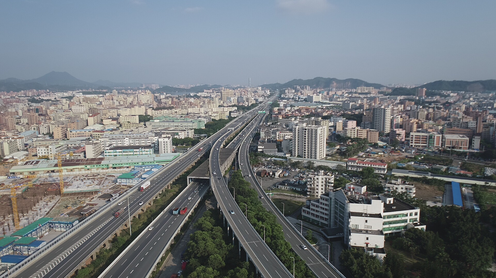
截至2024年，深圳全市道路总里程超过6500公里，"七横十三纵" 高快速路网格局基本成型。城市快速路与高速公路实现与珠三角各城市 一小时互通，轨道交通与路面交通无缝衔接，成为全国道路网密度最高 的城市之一。
从柴油巴士到全球最大新能源公交车队——绿色出行的深圳样本
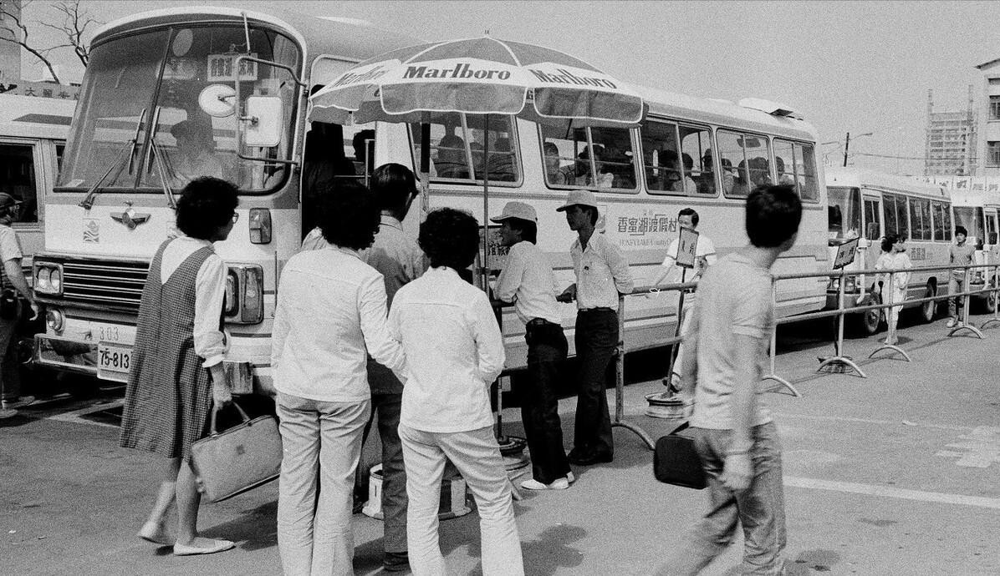
1979年深圳建市时仅有3条公交线路、12辆老旧柴油客车。 至1995年，公交线路增至60余条，但车辆仍以柴油动力为主， 运力不足与尾气排放成为城市发展中的痛点。 这一时期奠定了深圳公交网络的基础框架。
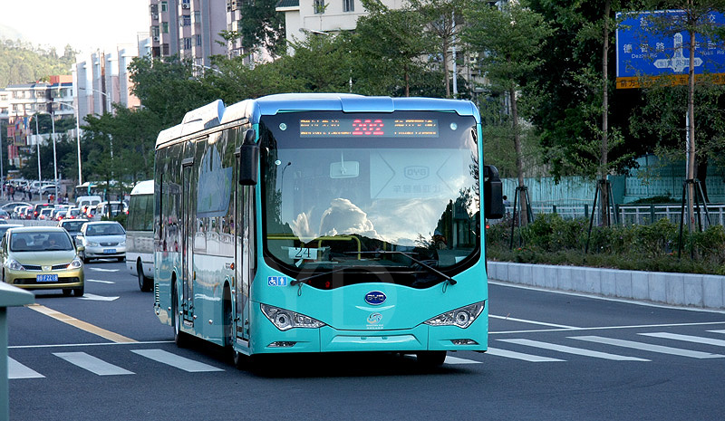
2017年深圳在全球特大城市中率先实现公交车全面电动化， 超过16000辆纯电动公交车投入运营，每年减少碳排放约48万吨。 深圳公交电动化模式被联合国环境规划署作为"深圳经验"向全球推广， 成为中国绿色交通的一张国际名片。
从罗湖桥绿皮车到"轨道上的大湾区"——速度改变时空
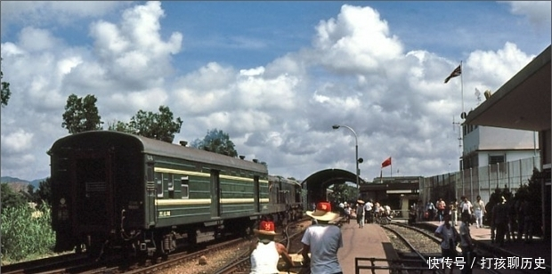
广深铁路（原广九铁路华段）始建于1911年，是深圳最早的铁路线。 改革开放后，罗湖火车站成为连接内地与香港的唯一铁路口岸， 日均发送旅客从数百人增至数万人。1994年广深准高速铁路开通， 成为当时中国第一条时速160公里的准高速铁路。
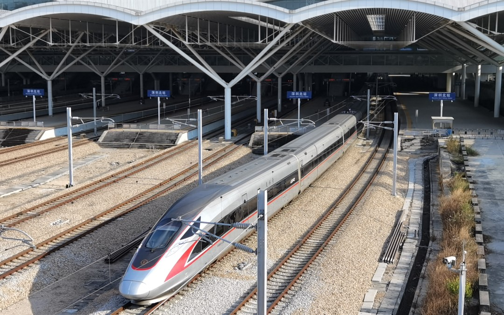
2011年深圳北站开通运营，标志着深圳迈入高铁时代。至2024年， 深圳已形成"三主（深圳北、福田、深圳站）四辅"的铁路枢纽格局， 广深港高铁、厦深铁路、赣深高铁等干线在此交汇，深圳到香港西九龙 仅需14分钟，"轨道上的大湾区"从蓝图变为现实。
从大型空港换乘到滨水慢行，真实镜头记录深圳人的出行空间

大沙河两岸步道把绿色空间、社区与公共活动节点串联起来。 这种连续、舒适的慢行环境，与轨道、公交和城市道路共同组成 更完整的综合交通体系，也让日常出行更贴近河流与城市自然。
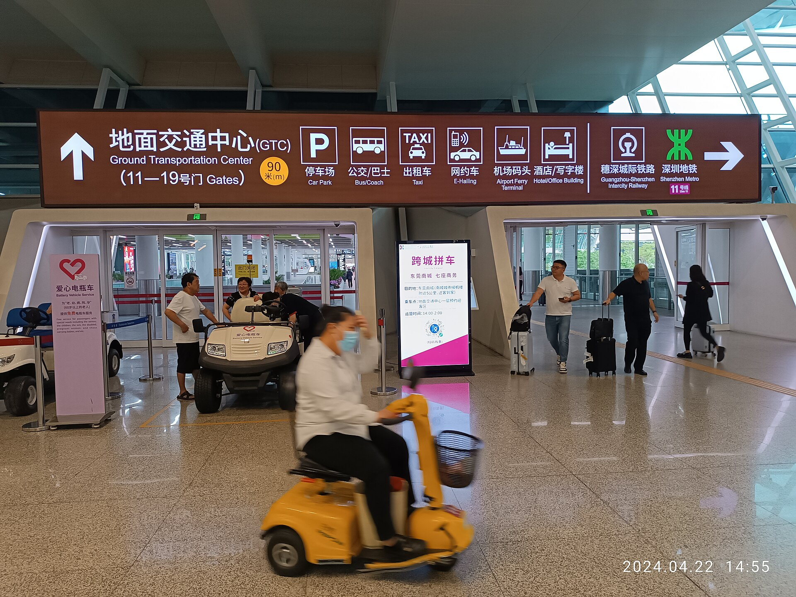
地面交通中心把停车、公交、出租车、网约车、城际铁路和地铁接驳 集中到同一换乘空间。清晰的导向系统与无障碍服务，让大型航空枢纽 与城市公共交通网络形成连续的出行链条。
一桥飞架南北，天堑变通途——从深圳湾到伶仃洋
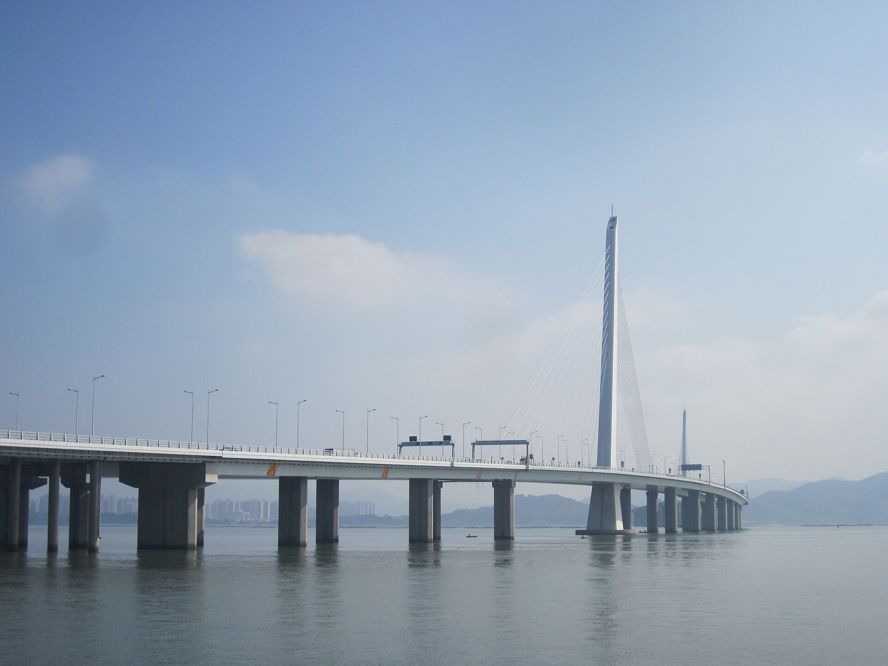
大桥连接深圳蛇口与香港新界西北部，使深港西部公路联系更加便捷，并与深圳湾口岸共同构成重要的跨境交通节点。
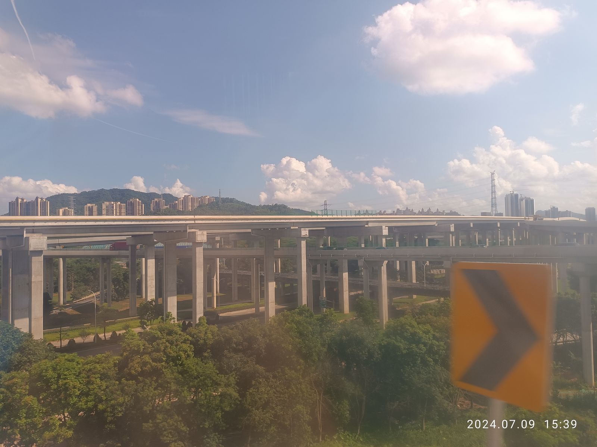
深中通道连接深圳与中山，将珠江口东西两岸更紧密地纳入湾区交通网络。沿线互通、高架道路与跨城公交共同把跨海主通道接入两岸城市路网。
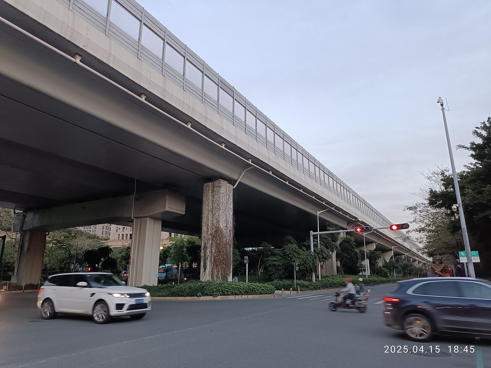
前海路高架与地面道路在紧凑空间内上下分流，分别承担快速通行、片区集散和街区到达功能，展示城市桥梁从跨越障碍走向组织立体路网的作用。
档案影像、公开史料与开放许可真实照片共同构成数字展陈
🏛️ 鸣谢以下机构提供珍贵史料与影像资料
* 新增枢纽与桥梁照片均采用CC0许可；来源页面与许可核验记录见项目图片授权清单